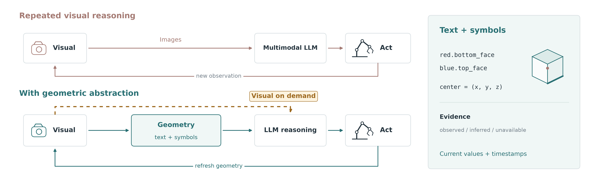
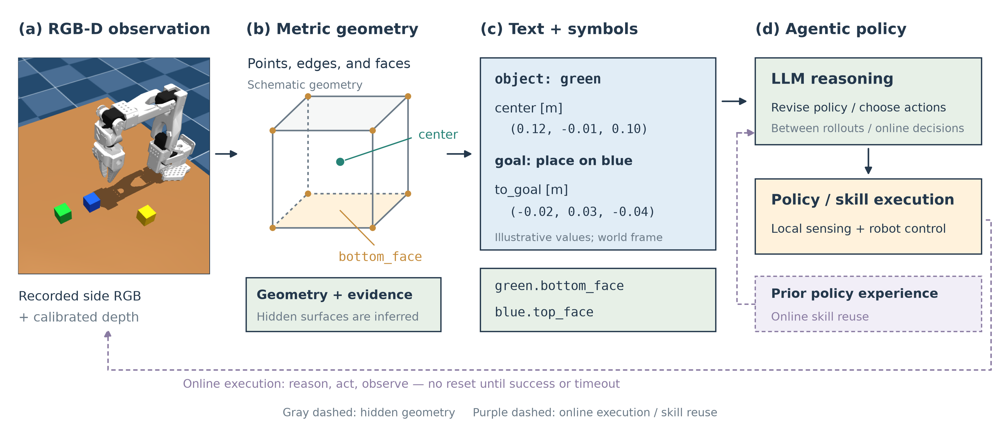
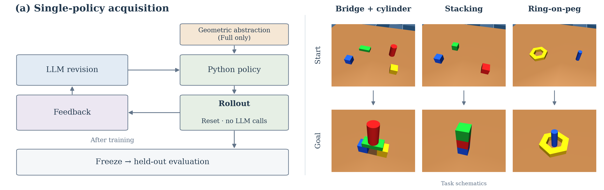
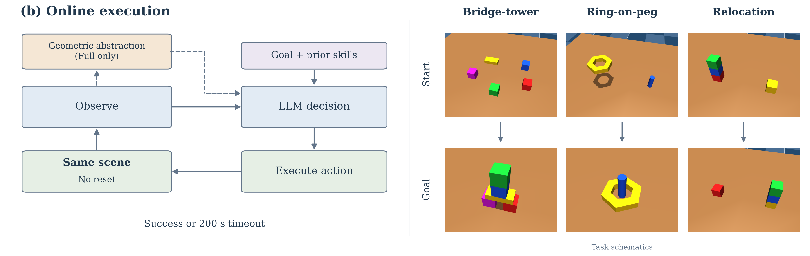
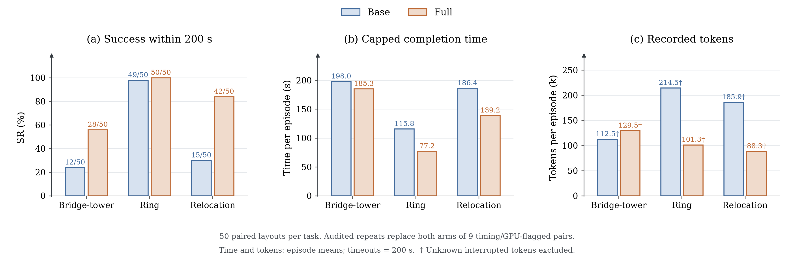

1Independent Researcher2Georgia Institute of Technology3The Hong Kong University of Science and Technology

TL;DR Keep the cameras on, but stop making the language model re-read images at every step. We ground RGB-D observations into typed, evidence-aware geometric references and compact textual checkpoints, so robot agents can reason and act with fewer model calls and image inputs.
Online ring-on-peg, Full vs. Base
−33.3%mean completion time
−49.4%model-request time
−52.8%recorded tokens
10.9 → 2.7images sent per episode
Abstract
Recent multimodal language models can reason directly about robot scenes, but it is unclear whether they need to repeatedly reinterpret visual observations throughout an interaction. We explore a simple alternative: maintaining task-relevant 3D information as a geometric abstraction that can be updated from current observations and read directly by the language model. Our prototype represents scene geometry through typed, evidence-aware references to object parts, grounds these references locally from RGB-D, and returns compact textual checkpoints after execution. We study this interface in two settings: policy synthesis across rollouts and continuous online execution. The results suggest that such an abstraction can reduce repeated multimodal interaction while retaining useful spatial information for manipulation. In online ring-on-peg, for example, it reduces mean completion time by 33.3%, model-request time by 49.4%, and recorded tokens by 52.8%. We view these results as preliminary evidence that explicit geometric state is a useful design point for agentic robot policies, and discuss when direct visual reasoning remains necessary.
Method

RGB-D observations are grounded into object geometry and exposed to the LLM through typed symbolic references and compact textual checkpoints. The same interface serves policy synthesis between rollouts and decisions within a continuing online episode.
Ground locally
Calibrated side and wrist RGB-D are back-projected into the world frame to estimate each object's center, orientation, faces, edges and vertices. All of this runs on the CPU. Shape may persist, but pose must be refreshed from a current observation, never copied from a commanded motion.
Reference symbolically
Policies refer to typed parts like red.bottom_face and blue.top_face. Every value carries its evidence status: observedinferredunavailable. The same program rebinds to new scenes.
Checkpoint in text
After each action the agent receives a compact checkpoint with the current geometry, its evidence, and the residual to the goal. Images stay available on demand when the geometry cannot explain a failure.
Operators on the geometric state
Operation
Inputs
Output
reference
object and role
geometric entity with evidence
relation
predicate and objects
residuals and true/false/unknown
align
source and target geometry
desired rigid transform
checkpoint
active object and goal
compact textual state
Experiments
A simulated SO-100 arm with calibrated side and wrist RGB-D cameras. Base and Full agents share the task specification, sensors, actuator and initial skills. Full additionally receives the geometric abstraction. Neither ever sees simulator object poses or evaluator state.
1 Single-policy acquisition
The LLM revises an executable Python policy between reset rollouts (R0–R3), with no LLM calls during execution. There are five paired chains per task, and every revision is tested on the same 100 held-out layouts.

Lines show mean held-out success of training-retained policies; bars show cumulative tokens. On the construction tasks, Full's R2 already beats Base's R3 for about half the tokens. On ring-on-peg, only Full succeeds (38% at R3).
2 Continuous online execution
The agent observes, reasons and acts in one continuing scene until it succeeds or hits a 200 s budget. Failed actions leave their consequences in place, and physics keeps running while the model thinks. We evaluate 50 paired layouts per task (300 episodes).


Full completes more episodes on Bridge-tower (28/50 vs. 12/50) and Tower relocation (42/50 vs. 15/50). On Ring, both succeed on almost every layout (50/50 vs. 49/50), but Full finishes sooner on 45 of the 50 paired layouts.Model interaction cost per episode. Full attaches fewer images on all three tasks while local sensing keeps refreshing the geometry.
Online outcomes and cost over 50 paired layouts per task (means per episode; timeouts count as 200 s)
Task
Agent
Success
Time (s)
Model (s)
Tokens (k)
Requests
Images
Bridge-tower
Base
12/50
198.0
55.5
112.5
7.88
7.50
Full
28/50
185.3
51.8
129.5
7.32
4.28
Ring-on-peg
Base
49/50
115.8
90.0
214.5
11.88
10.94
Full
50/50
77.2
45.6
101.3
6.90
2.72
Tower relocation
Base
15/50
186.4
80.3
185.9
11.58
11.34
Full
42/50
139.2
31.7
88.3
5.36
3.00
Rollouts
Successful Full examples from each study. These are sparse replays of archived camera observations, not continuous recordings, so playback speed does not reflect real time. The result tables include every success and failure.
Vision stays on, re-reading goes down. Local perception keeps the geometric state current, so the language model rarely needs a fresh image to decide.
Gains are task-dependent. Ring and Tower relocation roughly halve model time and tokens. Bridge-tower's higher success comes with 15.1% more tokens, so better completion does not require token savings on every task.
Scope is preliminary. These are simulated tasks with relatively simple object geometry. Real-world depth noise, occlusion and calibration error remain open, and we compare the full geometry-plus-feedback package rather than isolating its parts.
Looking ahead. Exposing grounded geometry as text could let fast text-only LLMs reason about physical scenes, and open a cleaner way to measure LLM spatial reasoning on verified geometric inputs.
Citation
@inproceedings{liu2026geometric,
title = {Do Agentic Policies Need to Look at Every Step? Geometric Abstraction for Reasoning and Action},
author = {Liu, Yihang and Chen, Yiming and Zheng, Mingzhe},
booktitle = {CoRL 2026 Workshop on Agentic Robotics},
year = {2026}
}